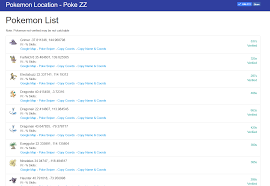
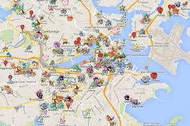

Pokedex100
This website is used to get coordinates for rare pokemon around the world. The best website to hunt for your rare pokemon in the world using fake GPS. Catch pokemon, enjoy & Train!!!!!!
Donate
Pokezz
This is another website for finding the coordinates for rare pokemon pokemon. It does not require any premium payment for usage. You can also donate, using bitcoin :1JXNhxi5gTzisGHpTBpSWiPJ6mqU1YByc7.

Pokemongomap
This website can be used for many things including to find raid battles, nests, sponsored gyms, time left and even some pokemon. This is good for hunting, Ex-raid pass.

Click here to downlaod Fake gps